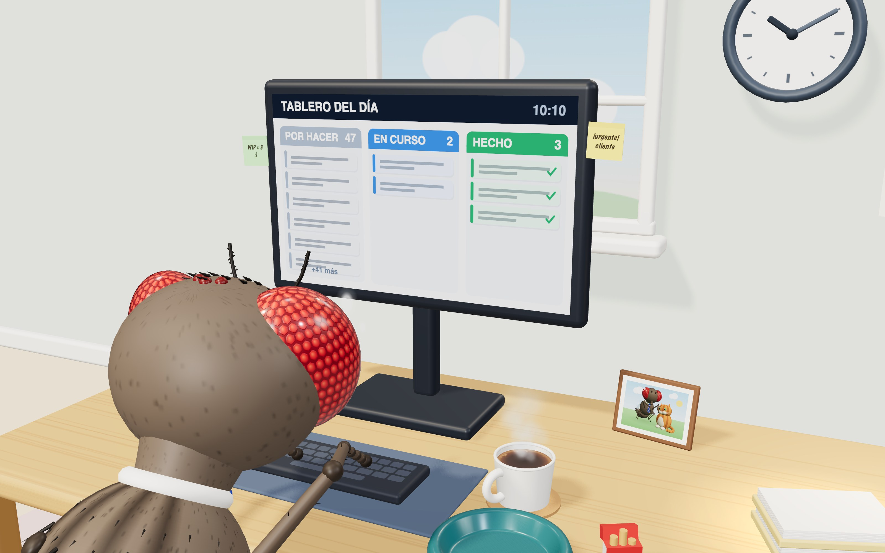
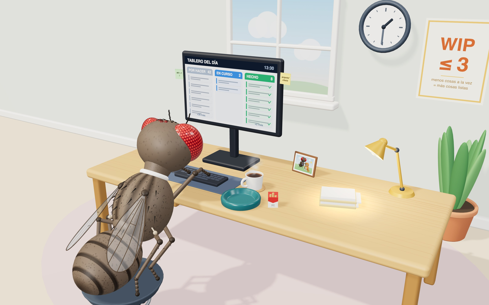

Un juego con una mosca real para ver por qué conviene limitar el trabajo en curso
Felipe Fernández · octubre 2026
Por dentro, un cerebro de mosca real Male CNS v1.0 · CC BY 4.0
Por qué estás viendo esto
Ocupado todo el día. ¿Y qué terminaste?
Lunes, 9 de la mañana. Tres pendientes de ayer, dos correos que esperan respuesta, el reporte, una urgencia de un colega y lo que ibas a terminar hoy. Nueve cosas abiertas. Trabajas sin parar. A las 6 no cerraste ninguna.
Casi todos trabajamos así, y se siente productivo. Pero hay una pregunta que pocos se hacen: ¿cuántas cosas a la vez conviene tener abiertas? La respuesta de siempre es “depende”. Este informe la muestra, en un minuto y con una mosca.
¿Por qué una mosca? Porque la mosca de la fruta es uno de los pocos animales con el mapa completo de su sistema nervioso, neurona por neurona: 166.700, publicado en 2026. Le pusimos una corbata, un tablero de tareas y un día de oficina que dura un minuto. Tú eliges cuántas tareas tiene abiertas a la vez. Después miras qué pasa: en su día y en su cerebro.
Qué es y qué no
Un juego en el navegador. Por dentro, un experimento en el computador: reglas basadas en estudios y un cerebro real. No mide personas ni equipos: una mosca sola, un solo día. Por eso cada número dice de dónde sale: en el juego, en la simulación o según estudios.
Con 2 tareas a la vez termina 18 al día; con 9, termina 9. Cada tarea tarda 1 hora o casi 9. Lo que sigue explica por qué, y qué hacer con eso.
En el juego, la misma mosca y las mismas horas
Con 2 tareas a la vez
Con 9 tareas a la vez
Tareas terminadas en el día
18
9
Tiempo por tarea
1 h
casi 9 h
De su tiempo, cada tarea espera su turno
la mitad
9 de cada 10 minutos
Estar siempre ocupado no es lo mismo que avanzar.
Para la sobremesaCinco premios Nobel de Medicina premiaron trabajos con esta mosca: el primero en 1933, el último en 2017. (nobelprize.org)
Mosca del WIP · Felipe Fernández
La protagonista y sus reglas
Una mosca real en una oficina de mentira, con reglas que puedes ver
Tu escritorio, pero en una pantalla: tablero de tres columnas, taza de café, cenicero y una oficinista con corbata. Cuánto trabajo acepta no lo decide ella: lo decides tú.

La mosca frente a su tablero de tres columnas: Por hacer, En curso y Hecho.
La protagonista es una mosca de la fruta, uno de los animales más estudiados en biología. Lleva más de un siglo en los laboratorios. Su cerebro es real (página 10); su oficina, un juego. Antes de que empiece el día eliges cuántas tareas puede tener en curso a la vez, de 1 a 10. Los equipos lo llaman límite de trabajo en curso (WIP, por su sigla en inglés). Después ella hace lo suyo: trabaja, cambia de tarea, espera respuestas y, si se agobia, sale a fumar.
Las reglas de su mundo, y de dónde sale cada una
Jugamos 200 días con cada número de tareas; lo que sigue son esos promedios. Tu lunes de nueve pendientes está en la página siguiente, a la derecha.
Para la sobremesaUnas tres cuartas partes de los genes de enfermedades humanas estudiados tienen un pariente en la mosca. (Reiter y otros, 2001)
Mosca del WIP · Felipe Fernández
Un mismo día, dos veces
Misma mosca, mismas tareas: con 2 a la vez termina 18; con 9, termina 9
Son la una y media de la tarde en las dos fotos. Mira el cenicero, el café y la pila de papeles. La única diferencia entre los dos días, en el juego, es el límite.

Izquierda, con 2 a la vez: tranquila, cenicero vacío y café humeante. Derecha, con 9: post-its, torre de papeles, sudor y colillas.
En el juego, promedio de 200 días
2 tareas a la vez · sostenible
9 tareas a la vez · sobrecarga
Tareas terminadas en el día
18
9
Tiempo por tarea, de que empieza a que termina
1 h
8 h 54 min
Minutos de cada hora que rinden de verdad
50
25 pierde 35 de cada 60
Cigarros y cafés
0 cigarros, 5 cafés
13 cigarros, 0 cafés
Con 9 tareas estuvo en la oficina las mismas horas, ocupada casi todo el tiempo. Te va a sonar: salta entre tareas, pierde un rato al retomar cada una y sale a fumar. Como avanza un poquito en cada tarea por turnos, todas tardan. El café se le enfrió sin que lo tocara.
El juego marca 3 como límite sostenible: hasta 3 tareas a la vez cierra el día tranquila. El 2 es, dentro de ese límite, el número con que más termina, y así lo marcan las tablas.
Terminó la mitad, cada tarea tardó nueve veces más y cerró el día colapsada. Con 2, cerró tranquila. ¿A cuál de las dos fotos se parece tu martes?
Para la sobremesaCada cambio de tarea cuesta décimas de segundo, medidas en laboratorio. En un día de nueve tareas, se suman. (Rubinstein, Meyer y Evans, 2001)
Mosca del WIP · Felipe Fernández
De 1 a 10 tareas
No hay un número donde todo se rompe: cada tarea extra cuesta un poco más
Antes de elegir tu límite, mira la tabla entera. Cada fila es un día promedio de 200, en el juego, con ese número de tareas abiertas a la vez.
Tareas a la vez
Terminadas
Tiempo por tarea
Rinden, de cada hora
Cigarros
Estrés al cerrar
Con fondo, los dos días de la página anterior: verde, 2; rojo, 9. Tiempo por tarea en horas de oficina; la tabla completa, con nueve columnas, en el anexo B.
Con 1 se queda esperando. Cuando su única tarea se traba, no tiene otra a mano. En el juego pasa más de 2 horas al día sin nada que hacer. Por eso termina menos que con 2.
De 2 a 3 termina casi lo mismo y cierra el día tranquila, sin un solo cigarro. Es lo que el juego llama límite sostenible: hasta 3, aguanta el día entero.
Desde 4, cada tarea extra empeora todo un poco: menos terminadas, más horas por tarea, más cigarros. Fíjate en el orden. El estrés y los cigarros aparecen con 4; la caída de lo terminado a la mitad, recién con 9. Primero se nota en la mosca; después, en el tablero.
Si hoy tienes nueve cosas abiertas, no caíste por un precipicio: bajaste de a un escalón por tarea. Se suben igual, de a uno.
Para la sobremesaEn Italia, un sorteo reparte las causas entre los jueces. Los que acumularon más juicios a la vez tardaron más en cerrarlos. (Coviello, Ichino y Persico, 2014 y 2015)
Mosca del WIP · Felipe Fernández
La paradoja
Con más tareas nunca le falta qué hacer, pero cada una pasa más tiempo esperando
Tu jefe te ve ocupado y le parece bien. Pero hay dos eficiencias: estar siempre ocupado (de recursos) o que el trabajo avance sin esperar (de flujo). Optimizar la primera arruina la segunda (Modig y Åhlström, 2012).
En el juego: cuándo tiene con qué hacer y cuánto avanza de verdad cada tarea.
Con las esperas de hoy, desde 3 tareas tiene con qué hacer todo el día. Abrir más solo pone tareas a esperar su turno. Las fábricas tienen nombre para ese punto: “trabajo en curso crítico” (Hopp y Spearman, Factory Physics).
Que cada tarea tarde más es casi una división del tiempo entre todas: matemática, no un hallazgo. En el juego sube en cada escalón: 34 minutos por tarea con 1, más de 10 horas con 10. Con 9 abiertas, cada una avanza el 9 % del tiempo que pasa en curso; el resto, espera.
La teoría solo dice que lo terminado deja de subir. Que baje lo ponen el costo de cambiar de tarea y los cigarros. Con nueve abiertas no rindes más: esperas más.
Para la sobremesaQue cada tarea tarde más cuando hay más abiertas no es una opinión: es un teorema, de 1961. (la ley de Little)
Mosca del WIP · Felipe Fernández
El límite
El mejor límite depende de cuánto se espera: sin esperas, 1; con esperas, de 2 a 4 en la simulación
¿Entonces una cosa a la vez? Depende de cuánto esperas a otros. Probamos 20 combinaciones de reglas: en 16 de los 17 casos con esperas, el mejor quedó entre 2 y 4.
En la simulación: terminadas al día según cuántas tiene a la vez; el círculo marca la mejor.
Las esperas empujan hacia más tareas: si una se traba, conviene tener otra a mano. Con una sola, en el juego, espera más de 2 horas al día. Cambiar de tarea empuja hacia menos: cada salto cuesta; mientras más cuesta, menos conviene abrir. Tu límite vive entre esas dos fuerzas.
Es un resultado de la simulación, no un número científico: tu equipo tiene el suyo. La mosca trabaja sola y no puede destrabar lo que espera. Un equipo sí; eso aconseja DORA: cuando alguien queda esperando, atacar la espera en vez de abrir otra cosa.
Reducir las esperas permite bajar el límite; subir el límite no reduce las esperas.
Un límite sostenible, no una cosa a la vez vale con esperas inevitables. Con menos esperas, más cerca de una.
Para la sobremesaEl ideal de DORA es una cosa a la vez. Quizá no se alcance, pero sirve de norte. (dora.dev)
Mosca del WIP · Felipe Fernández
Lo empezado no desaparece
Bajar el límite no la calma de inmediato: lo empezado tarda más de 2 horas en salir
Supón que a mediodía decides ordenarte: de diez cosas abiertas a dos. En el juego, las diez siguen ahí: no toma nuevas y cierra las que tiene.
En el juego, promedio de 200 días: 10 a la vez y a las 12:00 baja a 2.
Recién a las 14:35 vuelve a tener dos abiertas. Lo firme: lo empezado tarda más de 2 horas en salir, con cualquier regla probada. Que se calme a las 15:07 depende del supuesto del estrés: sube rápido, baja lento.
Sostenible: se mantiene todo el día sin colapsar. La idea tiene años, y no solo en el software. En fábricas de hace un siglo, pasado cierto punto cada hora extra rendía menos (Pencavel 2015).
Los procesos […] promueven el desarrollo sostenible. Los promotores, desarrolladores y usuarios debemos ser capaces de mantener un ritmo constante de forma indefinida.Principio 8 del Manifiesto […], la declaración de 2001 que fundó las metodologías […].
Si bajas tu límite un lunes, no lo juzgues el martes: lo empezado tiene que salir primero.
Para la sobremesaEn el laboratorio, la hormona del estrés llega a su pico en 20 a 40 minutos y tarda más en bajar. (Dickerson y Kemeny, 2004)
Mosca del WIP · Felipe Fernández
Con personas reales
No es solo la mosca: jueces, reclutadores y equipos apuntan en la misma dirección
Quizá piensas: es un juego, y con una mosca. Tienes razón. Ningún estudio con personas da un número de tareas; los que encontramos dan la dirección, y es la misma.
Jueces italianos
Los jueces que llevaban más juicios a la vez, por el sorteo de las causas, tardaron más en cerrarlos. La calidad de sus fallos no cambió: más malabares, más demora, misma calidad.
Tipo: estudio de campo; cada juez trabaja solo: el más parecido a la mosca. No mide equipos.Coviello, Ichino y Persico (2014, 2015)
Reclutadores
Un poco de trabajo en paralelo ayudó a terminar más; pasado un punto, terminaron menos. Ni muy poco ni demasiado.
Tipo: estudio de campo; una relación, no una causa. No dice dónde está el punto para otros trabajos.Aral, Brynjolfsson y Van Alstyne (2012)
Equipos de investigación
Quienes estaban en muy pocos equipos a la vez, o en demasiados, rindieron menos que los de un punto intermedio.
Tipo: estudio de campo en una organización; relación, no causa. No mide esperas ni tareas.Bertolotti y otros (2015)
Encuestas grandes a equipos de software
Limitar el trabajo en curso ayuda a entregar mejor, sobre todo junto a tableros visibles y retroalimentación. Su ideal es una cosa a la vez, como un norte.
Tipo: encuesta grande; relación, no causa. No dice que el límite solo baste.DORA (el programa de investigación de Google sobre equipos de software), capacidad "Work in process limits"
De más a menos fuerte: experimento · campo con causa (jueces) · campo, relación (los otros dos) · encuesta (DORA) · simulación (la mosca)
Fíjate en lo que comparten. Ninguno midió cuántas tareas conviene tener abiertas. Midieron qué pasa cuando son demasiadas: más demora por tarea, menos terminado, o las dos cosas. La mosca no agrega una prueba. Pone esa misma dirección en una pantalla, en un minuto, para que tu equipo la vea antes de discutirla.
Tres estudios de campo y una encuesta. Ninguno es un experimento con equipos, y ninguno da un número. El tuyo lo vas a tener que medir.
Para la sobremesaEn un experimento de 2008, las personas interrumpidas terminaron sus tareas más rápido. Lo que subió fue el estrés. (Mark, Gudith y Klocke, 2008)
Mosca del WIP · Felipe Fernández
El disfraz
La mosca no fuma: el cigarro es un disfraz de limpiarse las antenas
Si te preguntabas por qué una mosca fuma: no lo hace. No sabe qué es una tarea. Para que su cerebro sienta la carga, traducimos la oficina a lo que sí siente.
En la oficinaTareas abiertasMás tareas a la vez, más fuerte la molestia.
→
En la moscaTacto en la antenaComo polvo. La señal recorre su cerebro real y enciende el circuito con que se limpia las antenas con las patas.
→
De vuelta a la oficinaEl cigarroLimpiarse se dibuja como salir a fumar. En su cerebro se enciende el circuito; cuántos cigarros, lo decide el juego.
Ida y vuelta: la oficina se traduce a una molestia en la antena; la reacción vuelve como cigarro.
El café hace el mismo viaje: una pausa sin mucho estrés es azúcar en la trompita. En la simulación la señal no alcanzó a moverla: el café es solo ilustrativo. Solo esos dos estímulos; nunca dolor.
Según estudios con personas, fumar no calma: alivio breve y rebote; quienes dejan de fumar tienen menos estrés. El café del juego aparece solo sin mucho estrés. La cafeína sube la hormona del estrés, y más si ya estás tenso. Lo que ayuda es la pausa, no la cafeína. Si el café es tu única pausa, sigue siendo una pausa.
Lo que en el juego es un cigarro, en su cerebro es la orden de limpiarse las antenas. Cuál es tu cigarro, lo sabes tú.
Para la sobremesaUna mosca cubierta de polvo se limpia en un orden fijo: primero los ojos, después las antenas. En el juego, solo la antena. (Seeds y otros, 2014)
Mosca del WIP · Felipe Fernández
El cerebro
Su cerebro es real y se enciende más con más tareas, pero no prueba lecciones de oficina
Lo que ves encenderse no es un dibujo. Un proyecto científico público trazó el sistema nervioso central (cerebro y cordón nervioso) de una mosca macho, neurona por neurona.
Con 2 tareas a la vez
Con 9 tareas a la vez
Arriba el cerebro; abajo, el cordón nervioso que lleva las órdenes al cuerpo
En la simulación: 423 neuronas encendidas con 2 tareas y 1.328 con 9, tres veces más.
Son 166.700 neuronas, cada una en su lugar y con sus conexiones. Cada una se simula como un vaso con un agujerito: se llena con las señales y se vacía despacio. Al llegar a la marca se vuelca sobre las siguientes. Ese modelo acertó 9 de cada 10 predicciones en moscas vivas, en otro mapa (Shiu y otros, 2024).
De las 815 neuronas que mueven el cuerpo, con 2 tareas casi ninguna se enciende en la simulación. Con 9, 65; con 10, menos del 1 % de sus neuronas. Lo que tus nueve pendientes encienden es poco y preciso: el circuito de limpiarse.
Que las tareas sean polvo en la antena lo elegimos nosotros. El cerebro reacciona a esa molestia; no prueba las lecciones del juego. Esas las pruebas tú, con tu equipo.
Para la sobremesaTu cerebro tiene unos 86 mil millones de neuronas. Todo el sistema nervioso de la mosca, 166.700. (Azevedo y otros, 2009; Berg y otros, 2026)
Mosca del WIP · Felipe Fernández
Qué hacer con esto
Cuatro pasos para probar un límite con tu equipo
El juego no dice cuál es tu número: la mosca trabaja sola; tu equipo se pasa trabajo y se ayuda. Estos cuatro pasos sirven para encontrarlo.
1
Pongan el trabajo a la vista
Tres columnas bastan: por hacer, en curso, hecho. Lo que no se ve no se puede limitar.
2
Cuenten lo abierto y pónganle un límite
Cuenten cuántas cosas tiene abiertas cada persona hoy. Acuerden un límite bajo, escríbanlo en el tablero y respétenlo; con esperas inevitables, no una.
3
Cuando alguien queda esperando, ataquen la espera
No abran otra cosa para "aprovechar el tiempo": ayuden a destrabar lo que espera. Con menos esperas, el límite puede bajar.
4
Prueben dos semanas y midan
Cuántas tareas se terminan por semana, cuánto tarda cada una, cuánto hay abierto y cuánto espera cada tarea. Comparen con las dos semanas anteriores; lo empezado tarda en salir.
Limitar el trabajo en curso es uno de los hábitos de los equipos de alto desempeño, no el único. Ayuda sobre todo con un tablero visible y con retroalimentación de lo que pasa en producción. Y no esperes el cambio el primer día: como a la mosca, lo empezado te va a tardar en salir.
El primer paso no necesita reunión. Cuenta, ahora mismo, cuántas cosas tienes abiertas. Si te salió el número de la página 1, ya sabes por dónde empezar.
Un límite sostenible, no una cosa a la vez.
Para la sobremesaQuienes dejan de fumar tienen menos estrés que quienes siguen. La mosca solo lo logra de una manera: con 3 tareas o menos. (Taylor y otros, 2014; en el juego, 0 cigarros hasta 3)
Mosca del WIP · Felipe Fernández
Anexos
Para quien quiere revisar
Para entender la historia basta lo anterior. Estas tres páginas son para revisar de dónde sale cada cosa.
A
¿Es real?Qué es matemática, qué es estudio y qué pusimos nosotros.
B
Los númerosLas tablas completas y cómo se probó que el resultado aguanta.
C
Fuentes y créditosDe dónde sale cada idea.
Mosca del WIP · Anexos
Anexo A ·¿Es real?
Qué es matemática, qué es estudio y qué pusimos nosotros
Cada afirmación del informe, con su origen. La respuesta corta: la dirección tiene respaldo; los números son del juego.
Lo que decimos
Qué es
Por qué
Los límites de este experimento
Una mosca sola. No mide traspasos ni ayuda entre personas.
Un solo día. Con el mismo límite, cada mañana vuelve a empezar igual; el cansancio de una semana no está en el juego.
No mide personas. Es un experimento en el computador; una prueba con equipos de verdad sería otro proyecto.
El cerebro no decide. Muestra cómo reacciona una mosca a una molestia; las reglas del juego son nuestras.
Tipos de evidencia, de más a menos fuerte (página 8): experimento, se cambia una sola cosa a propósito y se mide (ninguno de los citados lo es) · campo con causa, un sorteo decide quién recibe más (los jueces) · campo, relación, se observa qué va con qué (reclutadores, equipos) · encuesta (DORA) · simulación, reglas y supuestos en un computador (la mosca).
Mosca del WIP · Felipe Fernández
Anexo B ·Los números
El mejor límite cambia poco al mover las reglas; cuánto cae, sí
Todo sale del mismo juego: 200 días por cada número de tareas, y después lo mismo cambiando las reglas una por una. Esperas más o menos frecuentes y largas, cambiar de tarea más o menos caro, tareas de otros tamaños.
Un día según cuántas tareas tiene a la vez (promedio de 200 días)
Tareas a la vez
Terminadas
Tiempo por tarea
Rinden, de cada hora
Tiene con qué hacer
Cuánto avanza cada tarea
Cigarros
Cafés
Estrés al cerrar
Verde: 2, el que más termina. Rojo: 9, sobrecarga, el día de las fotos. Tiempo por tarea en horas de oficina.
Cambiando las reglas: con cuántas esperas, qué límite conviene
Tareas que se traban esperando a otra persona
Mejor límite con las reglas de hoy
Si cambiar de tarea no costara nada
Si costara mucho más
Tiene con qué hacer todo el día desde
Entre paréntesis, los que terminan casi lo mismo. En 16 de los 17 casos con esperas el mejor quedó entre 2 y 4; sin esperas, 1. Cuánto cae lo terminado con 10 tareas depende del costo de cambiar: 21 % sin costo, 55 % hoy, 79 % con Weinberg completo. Bajar de 10 a 2 a las 12:00 tardó de 2 h 14 min a 3 h 25 min en volver a 2 abiertas (5 casos).
Cómo se probó
Antes de correr cada prueba se dejó escrito qué se iba a medir y qué contaría como "se cumple"; los controles se corrieron primero y dieron lo esperado. Ningún número se ajustó después.
Mosca del WIP · Felipe Fernández
Anexo C ·Fuentes y créditos
De dónde sale cada idea
Solo fuentes que verificamos. Respaldan la dirección del juego, no sus números.
Flujo y colas
Más tareas abiertas, más tiempo por tareaSi sale lo mismo y hay más adentro, cada una demora más. Es un teorema. Little (1961), Operations Research, 9(3).
Las dos eficienciasEstar ocupado o que el trabajo fluya. Libro de divulgación, no un estudio. Modig y Åhlström (2012), This is Lean.
El trabajo en curso críticoCon menos, la línea se queda sin qué hacer; pasado cierto punto, más trabajo abierto solo alarga la espera. Hopp y Spearman, Factory Physics (1996 y ediciones posteriores).
Personas y equipos
Jueces: más malabares, más demoraCon más causas a la vez, cada una tardó más; la calidad no cambió. Coviello, Ichino y Persico (2014), American Economic Review, 104(2); (2015), J. of the European Economic Association, 13(5).
Reclutadores: ni muy poco ni demasiadoAral, Brynjolfsson y Van Alstyne (2012), Information Systems Research, 23(3).
Equipos a la vez: un punto intermedioBertolotti y otros (2015), Research Policy, 44(4).
Los límites ayudan, con tablero y retroalimentaciónNo subir el límite cuando alguien espera: ayudar a destrabar. DORA, dora.dev/capabilities/wip-limits (CC BY 4.0). Forsgren, Humble y Kim (2018), Accelerate.
Ritmo sosteniblePrincipio 8 del Manifiesto […], texto oficial en español. […].org/iso/es/principles.html
Horas largas rinden cada vez menosObreras de fábricas de municiones, 1914–1918: bajo cierta cantidad de horas a la semana la producción subía parejo con las horas; más allá, cada vez menos. Pencavel (2015), The Economic Journal, 125(589).
Cambiar de tarea, estrés, tabaco y café
Cada cambio de tarea cuestaDécimas de segundo que se suman. La tabla "20 % por proyecto" es una regla práctica, no una medición. Rubinstein, Meyer y Evans (2001), J. of Experimental Psychology: HPP, 27(4). Weinberg (1992), Quality Software Management, vol. 1.
Lo que queda a medias sigue en la cabezaLeroy (2009), Organizational Behavior and Human Decision Processes, 109(2).
Las interrupciones estresanLos interrumpidos trabajaron más rápido, pero con más estrés. Mark, Gudith y Klocke (2008), CHI '08.
El estrés sube rápido y baja lentoLa hormona del estrés llega a su pico en 20 a 40 minutos, en el laboratorio. Dickerson y Kemeny (2004), Psychological Bulletin, 130(3).
Fumar no calmaDa un alivio breve y un rebote; quienes dejan de fumar tienen menos estrés. Parrott (1999), American Psychologist, 54(10). Taylor y otros (2014), BMJ, 348.
La pausa ayuda; la cafeína sube el cortisolPor eso el café del juego solo aparece sin mucho estrés. Albulescu y otros (2022), PLOS ONE, 17(8). Lovallo y otros (2005), Psychosomatic Medicine, 67(5); (2006), Pharmacol. Biochem. Behav., 83(3).
La mosca y su cerebro
Cómo se limpia las antenasSensores en la antena, neuronas de relevo y las que dan la orden a las patas. Con polvo, primero los ojos. Hampel y otros (2015, 2020), eLife. Seeds y otros (2014), eLife.
Simular el cerebro con su mapaUn modelo simple sobre el cableado real acertó 9 de cada 10 predicciones probadas. Con las conexiones barajadas al azar, la limpieza desaparece. Shiu y otros (2024), Nature, 634.
El mapa de la mosca macho166.700 neuronas del sistema nervioso central; simulamos 164.587, las que tienen sus conexiones completas. Berg y otros (2026), Cell, 189(18).
La mosca en la cienciaCinco Nobel de Medicina con moscas (1933, 1946, 1995, 2011, 2017); los genes de enfermedades con un pariente en la mosca; las neuronas del cerebro humano. nobelprize.org/drosophila; nobelprize.org/prizes/medicine/1946/summary/ y /1995/summary/. Reiter y otros (2001), Genome Research, 11(6). Azevedo y otros (2009), J. of Comparative Neurology, 513(5).
Datos del cerebro: Male CNS v1.0. This project is a collaboration between FlyEM (HHMI Janelia), the University of Cambridge (Dept. of Zoology), the MRC Laboratory of Molecular Biology, and Google Research.The Male CNS dataset is licensed under CC-BY. Licencia CC BY 4.0 · male-cns.janelia.org.
Imágenes: todas son del juego Mosca del WIP y de su arte de portada. Autor: Felipe Fernández, octubre de 2026.
Mosca del WIP · Felipe Fernández
Un límite sostenible, no una cosa a la vez.
Cerca del fin de un buen día, en el juego: dos tareas abiertas, la columna Hecho llena y el café todavía caliente.